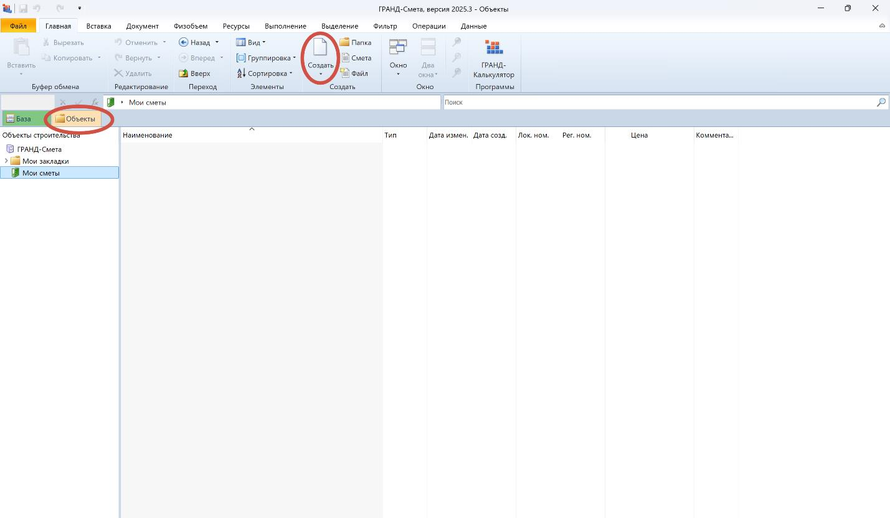
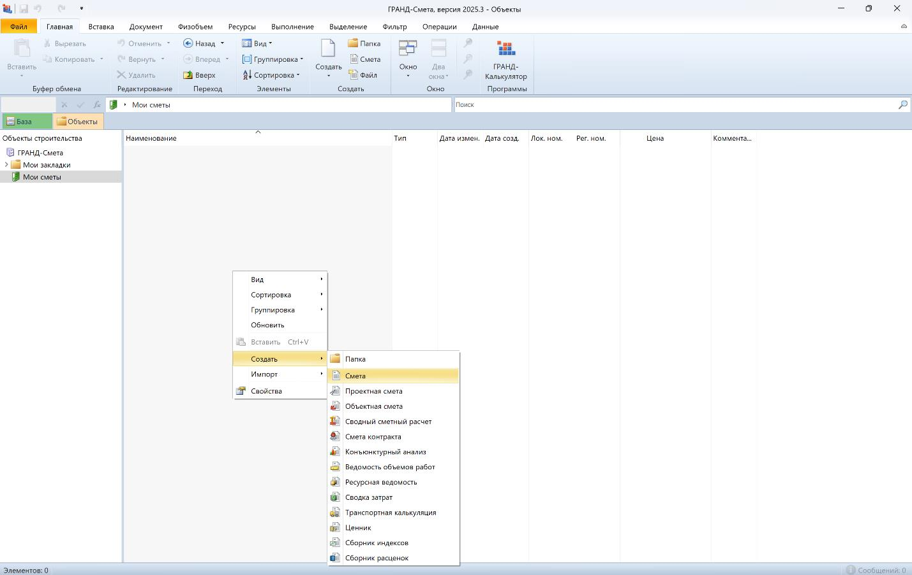
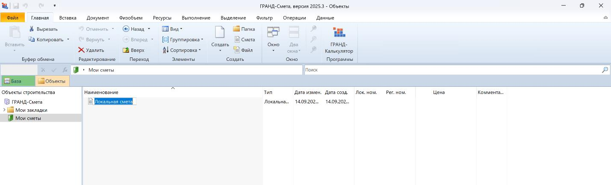
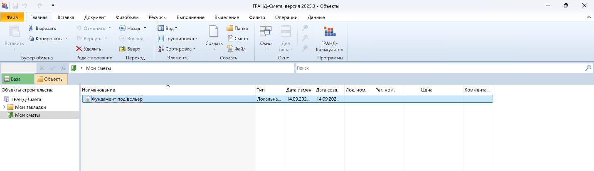
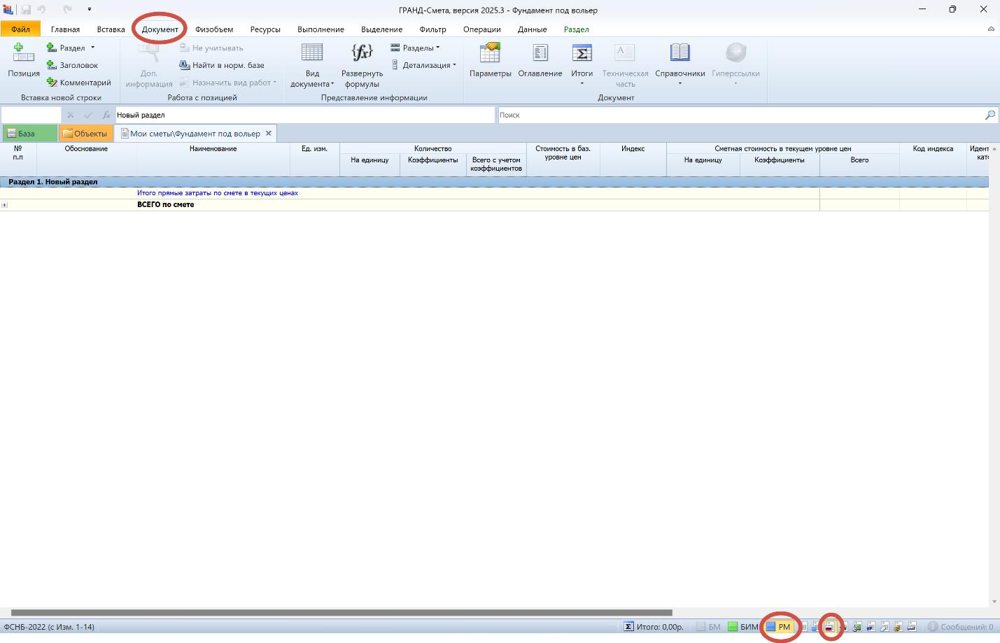

Создание новой сметы

На этом уроке мы с вами составим свою первую смету. Итак, перейдем от скучной теории к практике, ведь в работе инженера-сметчика именно практика играет важную роль.
Запускаем ПК ГРАНД-Смета

Нажимаем вкладку Объекты, далее, либо при помощи значка «Создать» на панели инструментов, либо щелкнув по пустому месту правой кнопки мышки создаем нужный нам документ, в нашем случае Смету (она же, по умолчанию – Локальная смета; и при выводе на печать – Локальный сметный расчет – она же основа сметной документации):

И называем ее как нам требуется.


Далее щелкаем на нее и, вуаля, начало положено.

Переходим на вкладку Документ. Также, для корректного отображения сметного расчета ресурсно-индексным методом выбираем на нижней панели кнопки «РМ» и «Форма локальной сметы 2020г.».
Существует три метода расчета сметной стоимости:
Базисно-индексный метод. Он позволяет быстро и просто рассчитать сметную стоимость, однако его точность может быть не самой высокой.
Ресурсный метод. Он основан на использовании текущих норм и цен на строительные ресурсы: материалы, машины, механизмы и труд. Такой подход дает наиболее точное определение итоговой сметной стоимости проекта благодаря детальному рассмотрению каждой составляющей расходов, но требует значительного времени, поскольку предусматривает необходимость постоянного отслеживания и обновления текущих рыночных цен.
Ресурсно-индексный метод. Благодаря учету актуальных цен и использованию индексов этот подход дает более достоверные результаты.
С третьего квартала 2023 года мы разрабатываем сметы ресурсно-индексным методом, если Заказчик не требует иного (сейчас уже не требует, все грамотные стали)
Несмотря на то, что этот метод требует значительных усилий при расчете, он дает возможность составить наиболее точные и подробные сметы. В них отражаются реальные расходы, которые потребуются для строительства.